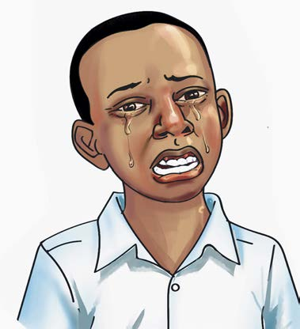
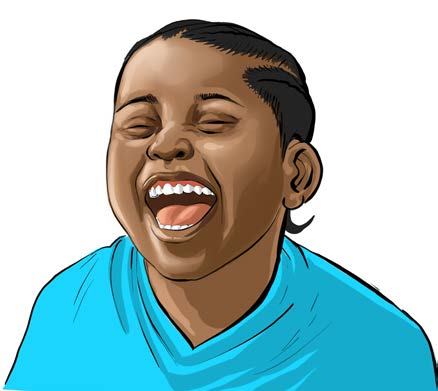

in acting.
An actor can laugh or cry in a low or high voice, as shown in Figure 1.
A

B

Figure.1: A an actor practising how to cry and B an actor practising how to laugh
Activity 5
(a) Act out laughing, begin by laughing softly, then gradually raise the volume until it becomes loud.
(b) Act out crying, start by crying silently, then gradually raise the volume until you cry out loud.
Exercise 2
1.
What can you do to show that you are sad without saying anything?
2.
Explain how you can show anger without raising your voice in acting.